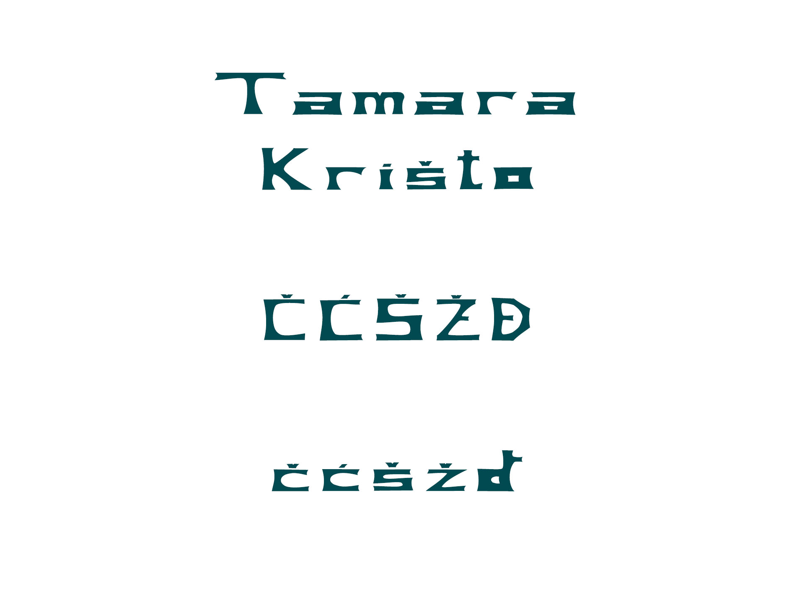
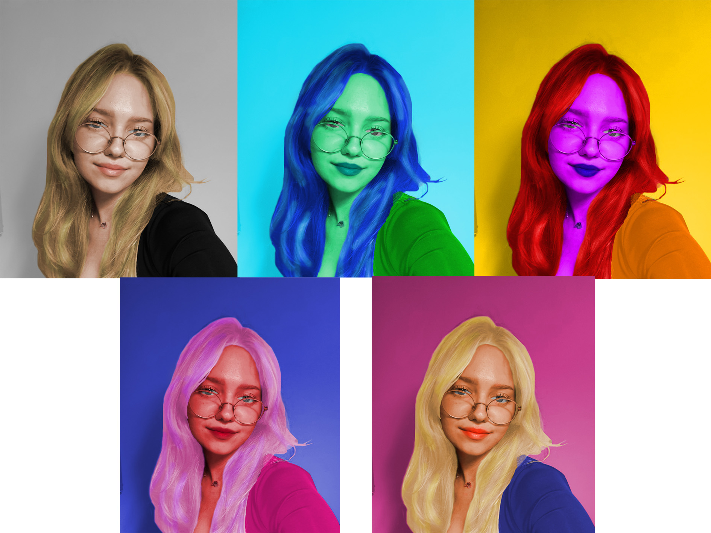
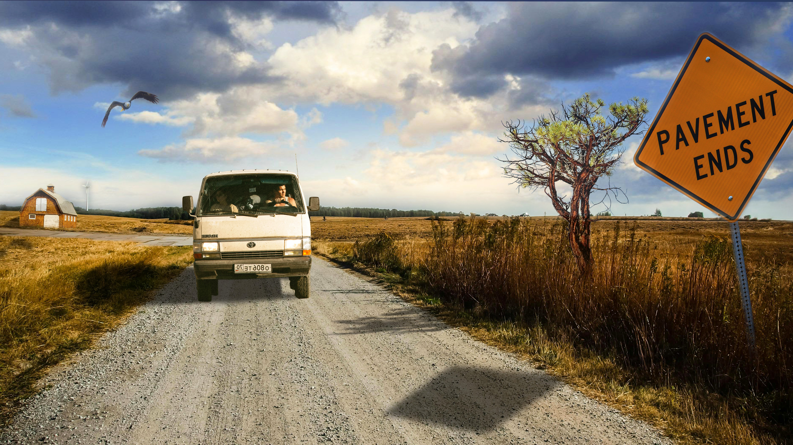
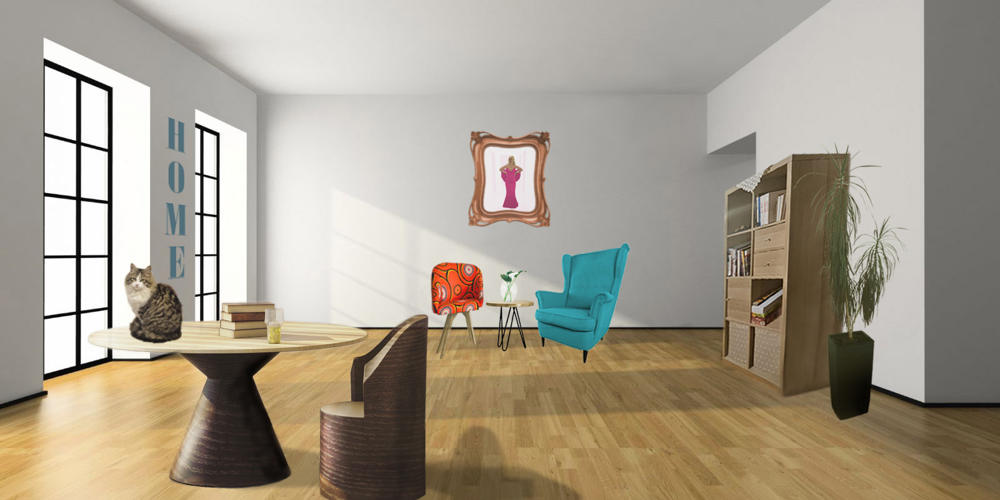

Vježbe
1.Vježba - font
2.Vježba - Bezierova krivulja, precizno crtanje
Pdf - prvi primjer vježbe Pdf - drugi primjer vježbe3.Vježba - boja, transformacije
Pdf - primjer vježbe4.Vježba - gradijenti, transparencija
Pdf - prvi primjer vježbe Pdf - drugi primjer vježbeProjektni zadatak 1
Pdf - primjer vježbe5.Vježba - retuširanje
6.Vježba - koloriranje
7.Vježba - fotomontaža
Projektni zadatak 2
8.Vježba - cinemagraf

9.Vježba - video obrada
10. i 11. vježba - web stranica u HTML-u i postavljanje na github
Moja prva web stranica